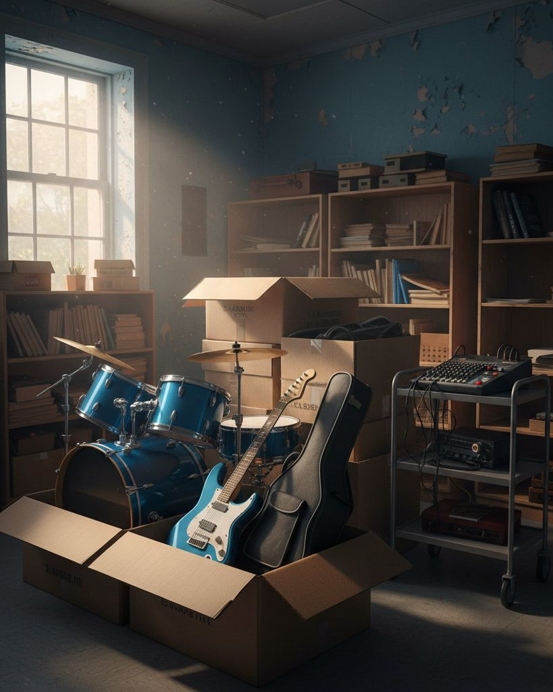
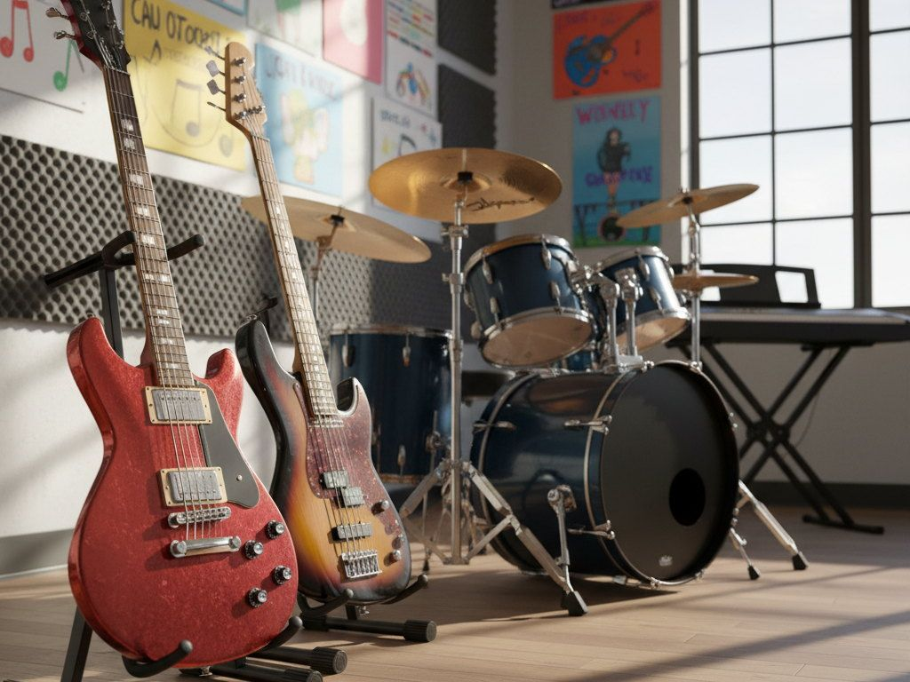
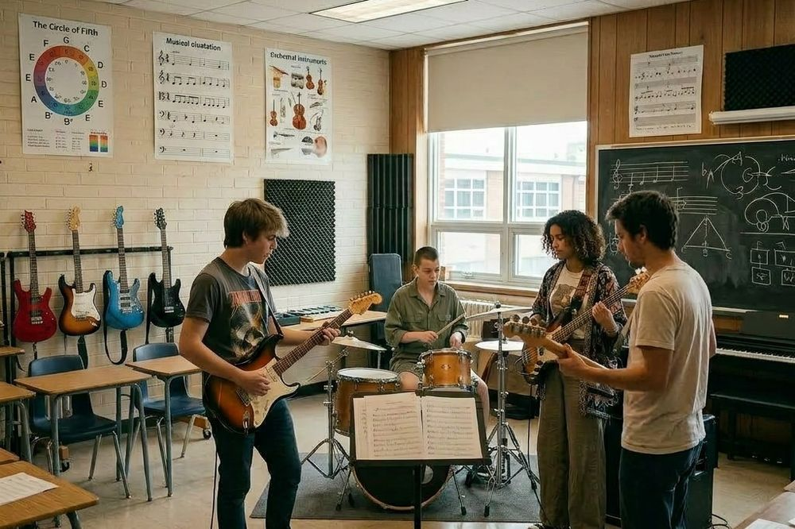
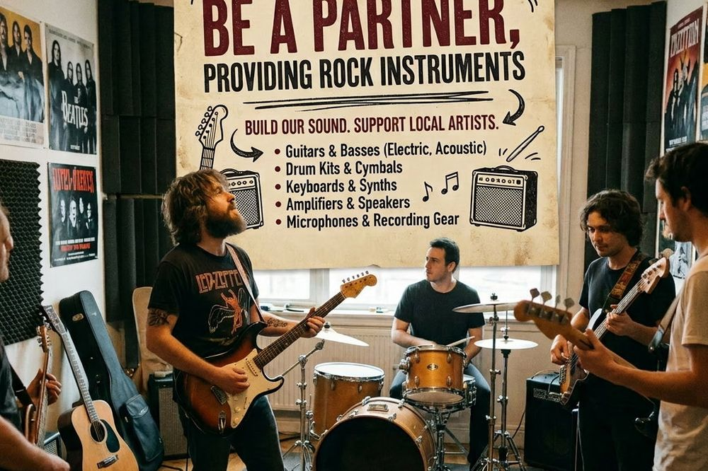
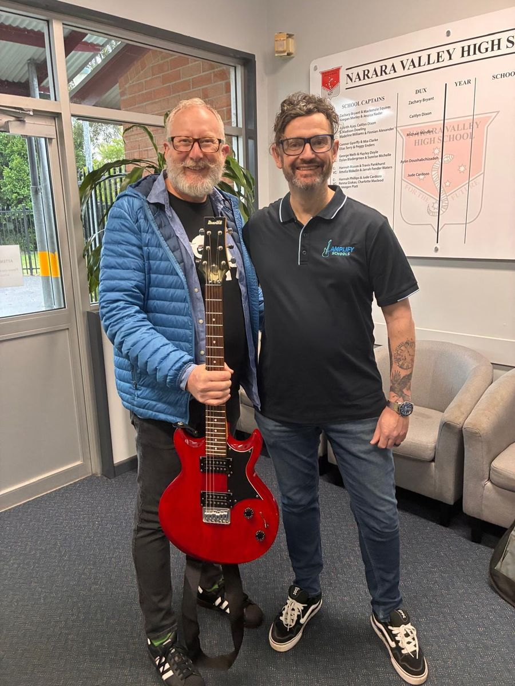
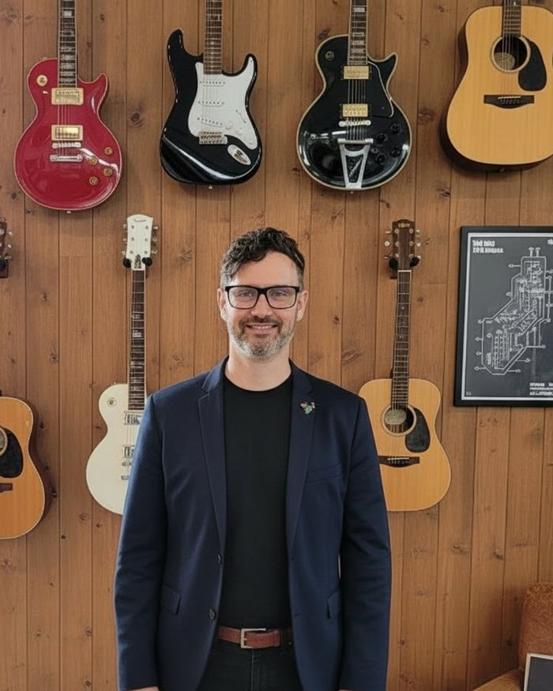
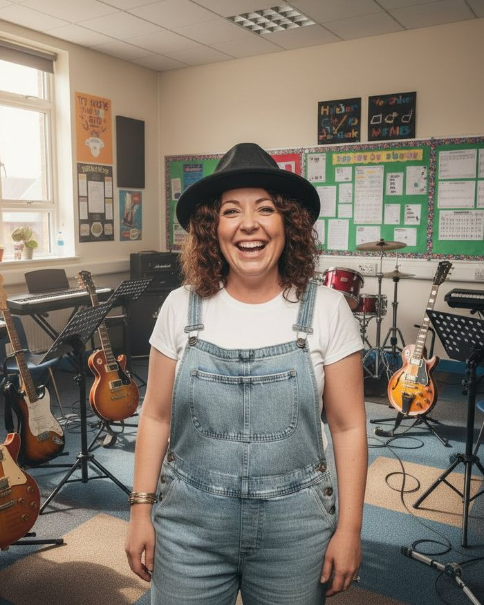
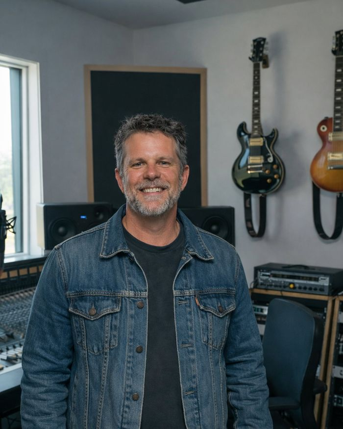

Rescue and refurbish
We take in donated guitars, basses, drums, keys, amps and recording gear, then restore and set up each piece properly.

We refurbish donated guitars, drums, keys and amps, then give them to school music programs.
Plenty of great instruments sit unused in garages and spare rooms while school music programs make do with tired, broken gear. Amplify Schools bridges that gap. We collect donated rock instruments, restore them properly, and give them to schools so more students get to plug in, play and perform.
Every instrument is set up and presented properly before it reaches a music room, so students learn on gear that works.
From a donated guitar to a school stage, in three steps.

We take in donated guitars, basses, drums, keys, amps and recording gear, then restore and set up each piece properly.

Refurbished instruments go straight into school music programs that need them most.

Local artists, businesses and communities partner with us to build the sound and back young players.
Every gift helps move an instrument from a spare room to a school stage.
Covers fresh strings, a lead and a proper setup for one refurbished guitar.
Funds the parts and workshop time to bring one donated instrument back to life.
Helps deliver a stage-ready package of instruments and amps to one music room.
What music teachers say about instruments we've delivered.

The refurbished guitars they have provided have expanded opportunities for students to learn, perform, and develop their musical skills.
Ashley, Music Coordinator, Erina High School NSW
Instruments like this truly make a difference, giving more students the opportunity to learn and refine their musical skills.
Adrian, Music Teacher, Narara Valley High School
The committee keeping the amps humming.

President and Founder
The steady heartbeat of Amplify Schools: part rock music tragic, part lovable nerd, part "I can fix that" wizard. He runs the operation with brains, heart and a suspicious love of spreadsheets. If there's a smarter way to get instruments to kids, he'll find it, usually with a fun fact about vintage amps.

Treasurer
Vanessa has always had a deep love for music. She feels every lyric, finds energy in a guitar riff, and believes a great song can flip your whole mood. Community organisations weren't on her bucket list, but making a real difference through music was in her bones all along.

Secretary
The quiet engine room of Amplify Schools: the first to say "How can I help?" and the last to leave when there's work to finish. Proof you don't need to play an instrument to help kids make music, just a good heart and a willingness to get stuck in.
Give money, or give the gear gathering dust at home. Teaching at a school that needs gear? Register your school.